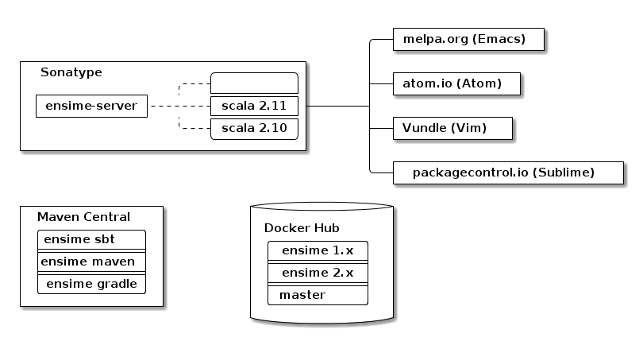
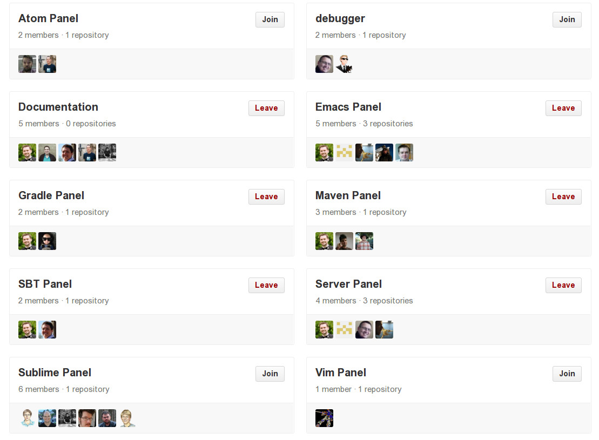
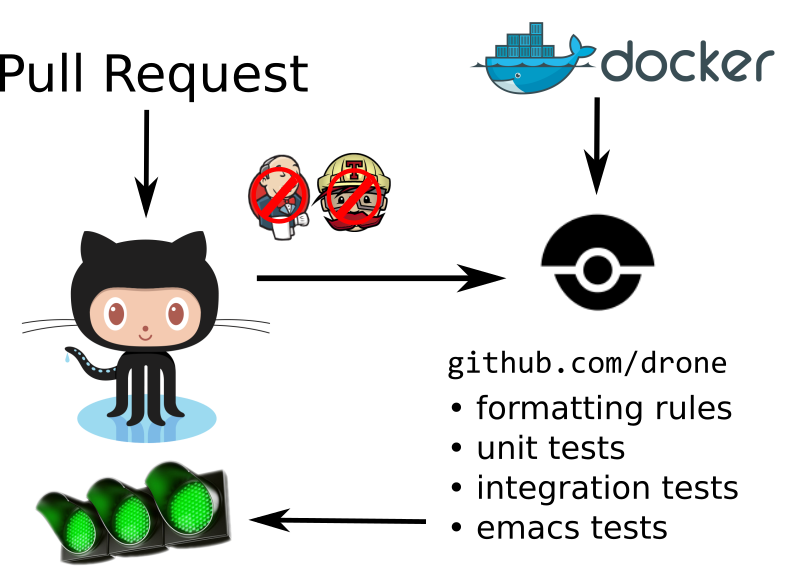
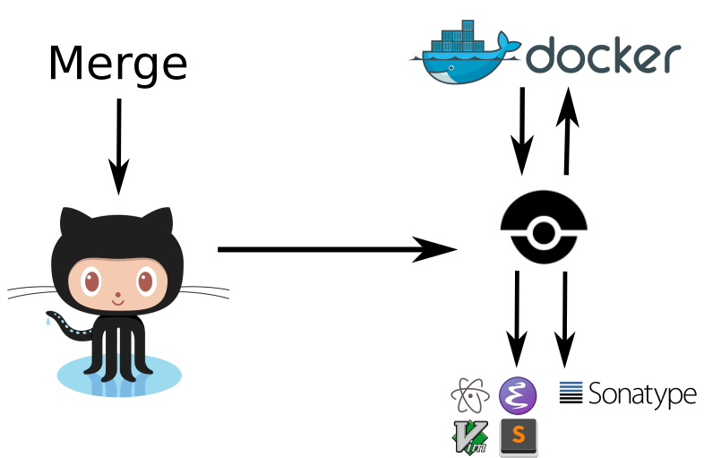

Ensime – a different design
Sam Halliday and Rory Graves
Scala Sphere 2016
Introduction
Rory Graves @a_dev_musing
- Wrote mobile games before it was cool
- Dynamic networks before clusters were cool
- Shows people around an old windmill at weekends
- Recently started Scalanator.io
- Martial artist who is a trained swordsman
Compiling
Sam Halliday @fommil
- co-founded FHSST, 5mil Free textbooks in South Africa
- co-founded a mathematics company
- quantum mechanics, machine learning, etc
- co-founded Neurofiction: brain scanners + fiction
netlib-javaunderpinning Apache Spark- most proud of getting to the Mun in Kerbal…
Mun
Straw Poll
- IntelliJ
- Eclipse
- ENSIME
- Other
TL;DR
- ENSIME is not really an IDE
- It is a toolset:
- building IDEs
- analysing code
Overview
- Ensime in action
- Architecture
- Ecosystem - our community
- The Future
Demo
Architecture

Ecosystem
Projects

Community

Community Principles
- Code of Conduct (Typelevel)
- good vibes
- Lots of help for new contributors
- ticket → general area of code
- fast PR reviews and feedback
- Pragmatic approach
- everybody is a Scala dev
- KISS: prefer failure / explanation, not complexity
- Free as in Burger
- Hack days in London! Join us remotely via
gitter.im
- Hack days in London! Join us remotely via
Continuous Integration

Continuous Delivery

Website
What going on
This year
- Moved license to GPL
- CLA Assistant
- Java Support
- Editors, editors and more editors!
- Bugs fixes
- Performance improvements
The Future
1.0
- Nearly there
- Ish
- ongoing development
- 20 open tickets, mostly minor bugs/improvements
Beyond thunderdome!
- 1.0 is really a stable release for legacy
- Allows bigger breaking changes
- Drop Java 6
- Drop 2.10? - probably not
- Java 6 leads to nasty limitations.
Javapocolpyse
- We have basic java support
- More is coming!
- Thanks Aemon!
2.0
- Really a catch all for everything not 1.0
- Things often move forward
- New debugging layer - may come earlier
- Graphpocolpyse
- enables all sorts of features
- 2.12
- Dotty?
Graphpocolpyse
- ENSIME lacks some key features
- find usages
- dead code
- etc.
- Limited by knowledge that must be computed
Graphpocolpyse 2
- Sam’s next big thing
- Graph database of project structure
- Opens up all shorts of fun stuff
Presentation Compiler Interface Rewrite
- Rory’s next big thing
- In progress
- Cleaner interface
- No more depending on ScalaC Internal
- Allows support for Dotty
Sharing for the win!
- The discussions with other tooling people has been awesome
- A lot of sharing is possible
Conclusion
Conclusion
- ENSIME is a protocol based IDE server
- We are resource limited, but
- Community is king!
- We are making progress
- The community has made a huge difference
- Interesting to see how it fits into Simon Schäfer’s model (up next)
Questions?
www.ensime.org
Come to the hacking session this afternoon!